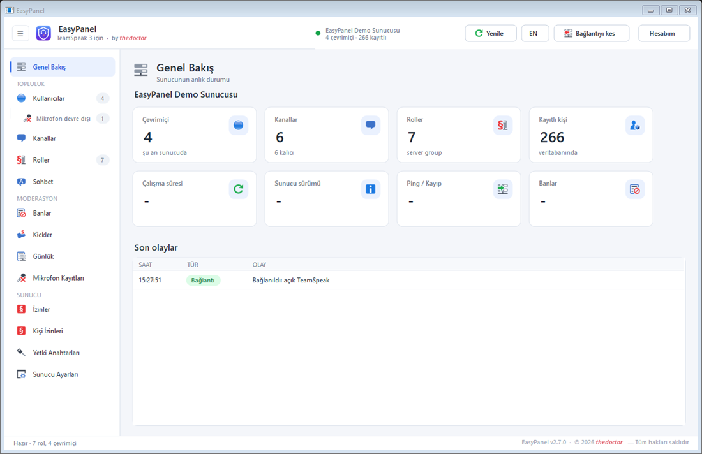
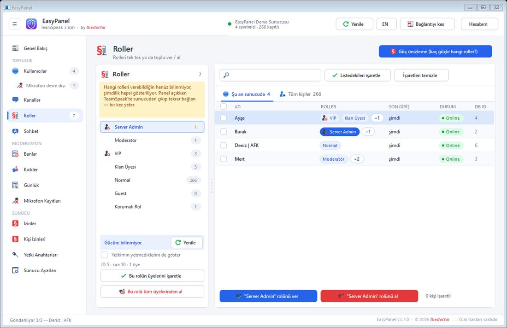
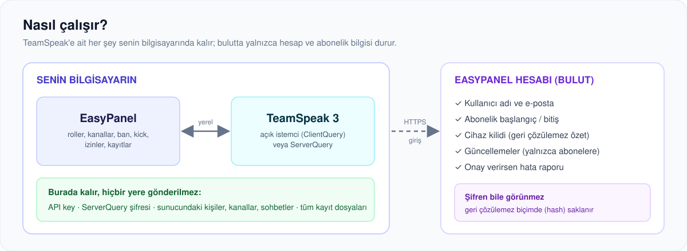

Rolleri tek tıkla ver, kanalları toplu düzenle, kim mikrofonunu kapattı, kim kimi attı, rolü kim verdi — hepsini anında gör. Tamamen Türkçe, karmaşık menüler yok.
Program yalnızca abonelere verilir. Kayıt ve giriş program içinden yapılır.

TeamSpeak'in kendi pencerelerinde dağınık duran her şey, sade bir arayüzde.
Tek tek ya da toplu ver / al. Kutucuklarla birden fazla role göre filtrele (VE / VEYA). Sadece yetkinin yettiği roller görünür.
ID, IP, Unique ID ve eski isimleri tek bakışta. İsim değiştirip gelen kişiyi tanı. Taşı, dürt, mesaj at, at, banla.
Tam kanal düzenleyici, sürükle-taşı, toplu ad biçimi (𝐤𝐚𝐥ı𝐧, 𝑖𝑡𝑎𝑙𝑖𝑘…), kanal simgeleri, herkesi tek komutla çek.
TeamSpeak'in izin penceresinin tamamı: roller, kişiler, kanallar, kanal grupları. Her izin Türkçe açıklamalı, güç önizlemeli.
Rol kayıtları (kim kime verdi), kick kayıtları, mikrofon kayıtları, canlı günlük — kalıcı, sen yokken de.
Sunucu ve kanal sohbeti, biçim araç çubuğu, mesajları tek tıkla 8 dile çevir, toplu dürtme / mesaj.

TeamSpeak'ine ait her şey senin bilgisayarında kalır.

Hiçbir işlem sen butona basmadan yapılmaz; toplu işlemlerde önce özet, sonra onay.
Panel sunucuya senin yetkilerinle bağlanır; yetkinin yetmediği bir şeyi zaten yapamaz.
Komutları akıllıca birleştirir; "Packet resend failed" ile sunucudan düşmezsin.
EasyPanel kapalı betada. Aşağıdaki Discord adresinden yaz; aboneliğin açılınca program ve güncellemeler program içinden gelir.
Program yalnızca yetkinin yettiği işlemleri gösterir. Örneğin rol verme gücün 50 ise sadece 50 ve altı güç isteyen rolleri verebilirsin.
Evet. Yalnızca kendi bilgisayarında, Windows'un şifrelemesiyle saklanır; EasyPanel sunucularına hiç gönderilmez.
Her abonelik tek bilgisayarda çalışır. Bilgisayar değiştirdiysen destekten cihaz sıfırlaması iste.
Hesabım sayfasına programdaki e-posta ve şifrenle gir; bitiş tarihini, kalan günü ve bağlı bilgisayarı görürsün. Buradan destek talebi (ticket) de açabilirsin.
Program günlük kullanıma hazır, ama hâlâ geliştiriliyor. Hata olursa program "raporu göndereyim mi?" diye sorar.
Abonelik, cihaz sıfırlama ya da soruların için Discord'dan yaz ya da hesabından ticket aç.